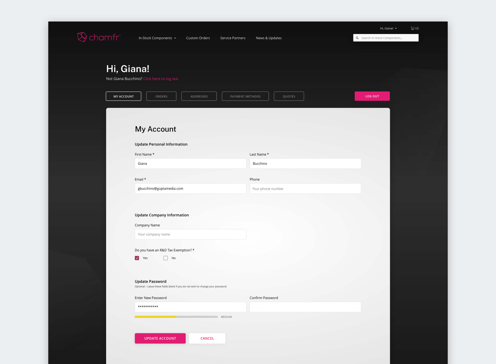

ADDITIONAL CREDITS
Created at Gupta Media
PROJECT INVOLEMENT
- brand refresh
- information architecture
- UX & UI design
- ecommerce design
RELATED LINKS
chamfr websitechamfr
WEB DESIGN
Chamfr is an online marketplace, exclusively for medical components, designed to connect engineers and supply chain teams with sellers that are committed to getting components in your hands, faster. The Chamfr team were looking for a new website that would provide a better experience for both customers and sellers.
While working to modernize their existing brand through the process, we began the full overhaul of the Chamfr website. Our main goals were to make the experience feel more inviting, but avoid any "fluff" considering the audience in mind was experienced engineers.
Making Customization Easy
One of the most important features Chamfr wanted to target to users was their Request for Quote tool. Previously customers could request custom components through a contact form, but this time around we wanted the RFQ tool to serve as a well-rounded experience.
Users are guided through 4-step process where they can select the quote type, seller, component category, and custom details. The new user experience was meant to be easy for those who know exactly what they need, and a hand to hold for those who need more information.
Improved Access to Communication
In order to keep business flowing for all parties involved, the account dashboard experience needed a good refresh. This meant improving organization of the different account sections – i.e. orders, addresses, payment methods, etc.
Being a seller's marketplace, it is vital for accounts to be clear and easy to navigate when it comes to communicating, whether from the perspective of a client or a customer. Previously, communication was not a highlight, especially on the go with mobile. Our design had to change this.
